What this section covers: What a gyroscope is, its two fundamental properties, and why it matters for aviation instruments.
The simplest gyroscope (gyro) is a rapidly spinning disc (rotor). Any rapidly spinning symmetrical rotor exhibits gyroscopic properties — including the earth, spinning tops, and bicycle wheels.
Typical aircraft gyro rotor sizes:2 to 5 cm diameter, spinning at 4,000 to 55,000 rpm depending on design.
The shaft about which the rotor spins is the axis. Gyros are defined as horizontal or vertical by reference to the spin axis (not the rotor face).
Two basic gyroscopic properties:
Rigidity — the tendency to maintain the spin axis direction in space
Precession — the response to an applied force, at 90° in the direction of rotation
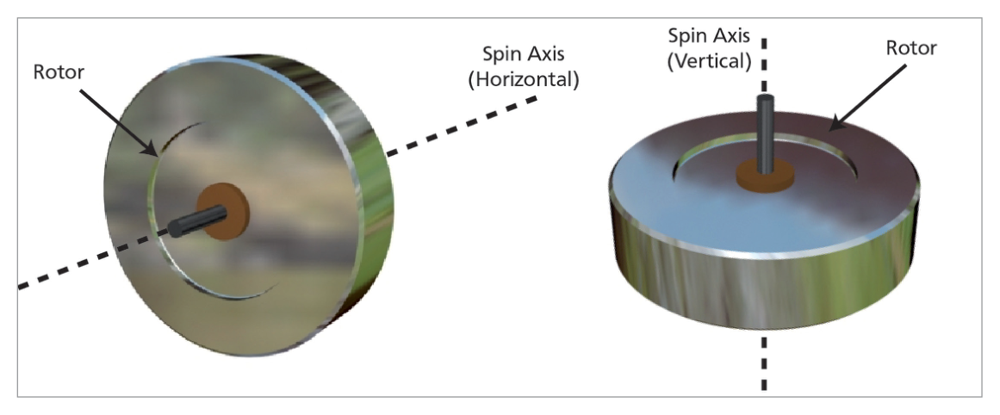
Fig. 11.1 – Gyro parts and orientation (horizontal vs vertical defined by spin axis) — source p.137
2. Rigidity
What this section covers: Definition, cause, and factors affecting rigidity.
Rigidity (also called gyroscopic inertia): The gyro's property of maintaining its spin axis in a fixed direction in space unless subjected to an external force. Caused by the inertia of the spinning mass, subject to Newton's Laws of Motion.
The words "fixed direction in space" are critical — the gyro points to a fixed point in the universe (e.g. a distant star), irrespective of earth rotation or aircraft motion. Over short periods this distinction from "fixed in earth terms" may not matter, but it becomes critical for long-duration precision gyros (e.g. INS).
Rigidity increases with:
1. Increased MASS of the rotor
2. Increased effective RADIUS at which mass operates (moment of inertia)
3. Increased ROTOR RPM
Note: mass concentrated at the RIM gives maximum moment of inertia for minimum total mass
(like a bicycle wheel with spokes)
3. Gimbals and Degrees of Freedom
What this section covers: How gimbals allow the aircraft to manoeuvre without disturbing the gyro.
For a gyro to maintain its direction while attached to a manoeuvring aircraft, it needs suspension devices that allow the aircraft to move around it — these are called gimbals.
3.1 One Gimbal (One Degree of Freedom)
One gimbal allows the aircraft to bank without disturbing the gyro's spin axis. However, yawing would force the gyro out of its original orientation.
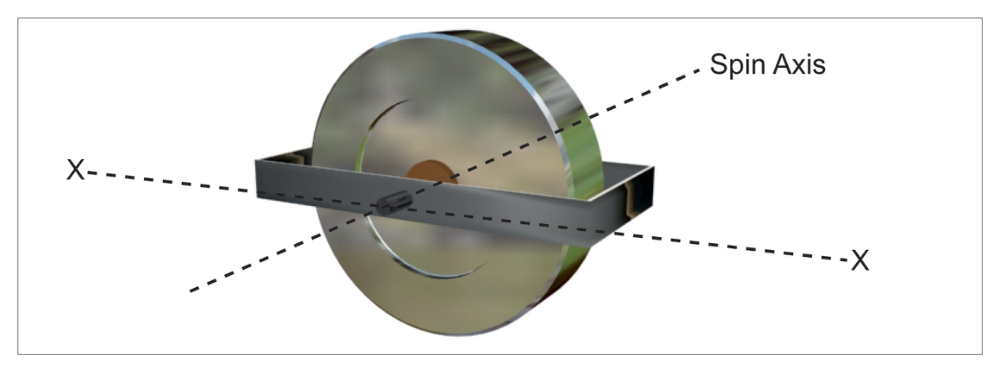
Fig. 11.2 – One gimbal: aircraft can bank but not yaw without disturbing gyro — source p.137
3.2 Two Gimbals (Two Degrees of Freedom)
Two gimbals allow the aircraft to pitch, bank, AND yaw without disturbing the gyro.
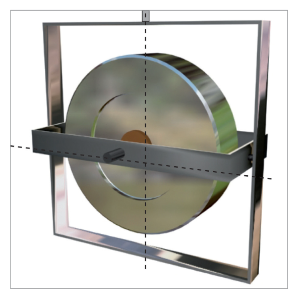
Fig. 11.3 – Two gimbals: aircraft free in all three axes of rotation — source p.138
EASA Convention on Degrees of Freedom: EASA does not count the spin axis as a degree of freedom, because no measurement can be made in that direction. Therefore a 2-gimbal system = 2 degrees of freedom (EASA convention).
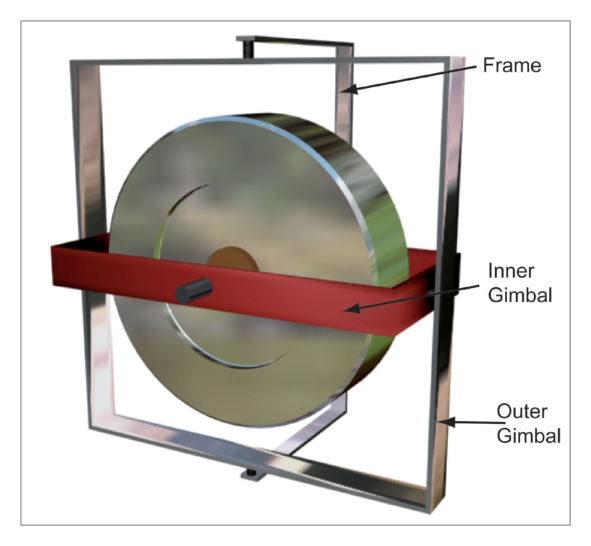
Fig. 11.4 – Two gimbals and a frame: inner gimbal, outer gimbal, frame (attached to aircraft) — source p.138
4. Precession
What this section covers: How a gyro responds to an applied force — the 90° rule.
Precession Rule: A torque applied to a spinning gyro is precessed through 90° in the direction of rotation of the rotor. The gyro moves as if the force had been applied at that 90° advanced position.
Example: If the gyro rotates clockwise (viewed from above) and an upward force is applied at the 12 o'clock position of the spin axis, the effective precession acts at the 3 o'clock position — the rotor moves into the page about the vertical axis.
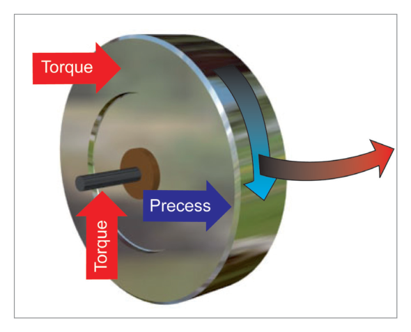
Fig. 11.5 – Torque precessed through 90° in direction of rotation — source p.139
4.1 Precession in a Gimballed Gyro
When a small mass M is applied on the inner gimbal (producing a torque about the YY axis):
The gyro axis tilts through a small angle φ initially.
The torque is then precessed 90° — the spin axis starts rotating at constant velocity about the ZZ axis.
If the torque is withdrawn, precession ceases immediately.
While the torque continues, precession continues at constant velocity.
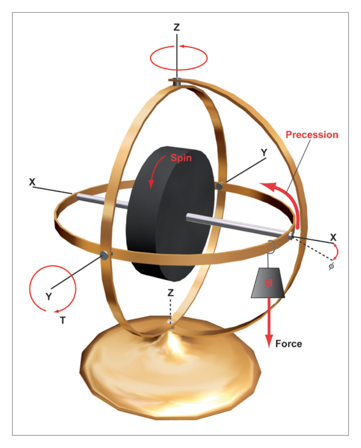
Fig. 11.6 – Gyroscopic precession: mass M on inner gimbal causes rotation about ZZ axis — source p.139
5. Relationship Between Precession and Rigidity
What this section covers: The inverse relationship — high rigidity means low precession rate, and vice versa.
Rate of Precession ∝ Applied Torque / (Moment of Inertia × Rotor RPM)
Precession rate is:
- DIRECTLY proportional to applied torque
- INVERSELY proportional to moment of inertia
- INVERSELY proportional to rotor RPM
The key relationship: Precession and rigidity are opposite characteristics. A highly rigid gyro precesses very slowly (small precession for a given torque). A weakly rigid gyro precesses rapidly. High rigidity = low precession; low rigidity = high precession.
6. Wander – Drift and Topple
What this section covers: The classification of any departure of the gyro axis from its original orientation.
Any departure of a gyro axis from its original orientation is called wander. Wander may be real or apparent, or a combination of both.
Type of Wander
Plane
Axis Type
Drift
Horizontal plane
Horizontal axis gyros can drift
Topple
Vertical plane
Both horizontal and vertical axis gyros can topple
Important: Vertical axis gyros can ONLY TOPPLE (forwards, backwards, or sideways) — they CANNOT drift.
Fig. 11.9 – Vertical axis gyro: can topple in any direction, but cannot drift — source p.141
7. Real and Apparent Wander
What this section covers: The two fundamental types of wander and their causes.
7.1 Real Wander
The gyro axis moves with respect to inertial space. Caused by manufacturing imperfections: uneven rotor bearing friction, gimbal friction, imbalance of rotor mass, unbalanced gimbals. Also called random wander. Can be reduced by higher quality engineering, but at cost.
7.2 Apparent Wander
The gyro remains fixed in inertial space, but the observer's frame of reference changes. Two types:
Earth Rate — caused by the rotation of the earth
Transport Wander — caused by flight east or west at latitudes other than the equator
8. Earth Rate
What this section covers: How earth's rotation causes apparent gyro drift — the formula and hemisphere sign convention.
Earth Rate = 15 × sin(latitude) °/hour
Where:
- Earth rotates 360° in 24 hours = 15°/hour
- At equator (lat 0°): sin 0° = 0 → Earth Rate = 0
- At poles (lat 90°): sin 90° = 1 → Earth Rate = 15°/hour
- At 60° lat: Earth Rate = 15 × sin 60° = 15 × 0.866 = 13°/hour
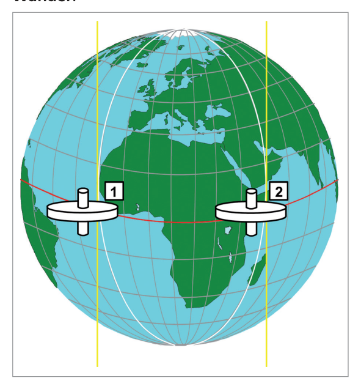
Fig. 11.10 – At the equator: gyro axis stays aligned with local meridian as earth rotates — source p.142
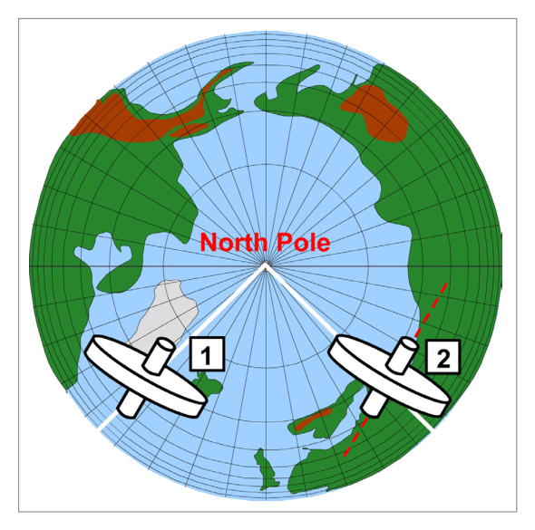
Fig. 11.11 – At a pole: full earth rate of 15°/hour — gyro heading appears to decrease in NH — source p.143
Earth Rate Sign Convention:
Northern Hemisphere: Earth rotates anticlockwise when viewed from above N pole → gyro heading appears to decrease → Negative earth rate = −15 × sin(lat) °/hour
Southern Hemisphere: Earth rotates clockwise when viewed from above S pole → gyro heading appears to increase → Positive earth rate = +15 × sin(lat) °/hour
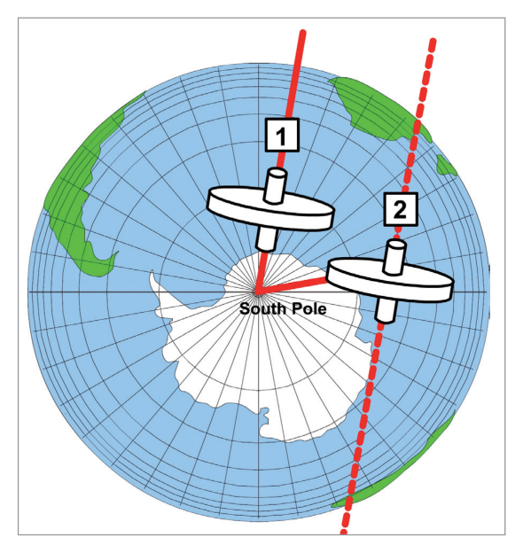
Fig. 11.12 – Earth rate at South Pole: clockwise rotation → gyro heading increases (positive) — source p.143
9. Transport Wander
What this section covers: How flight east or west causes apparent gyro drift due to meridian convergence.
When an aircraft flies east or west, it moves from one meridian to another. The gyro remains fixed in space (aligned with the original meridian), but the local meridian direction (true north) changes as the aircraft's longitude changes. The difference between the gyro's orientation and local true north is transport wander.
Transport wander is equivalent to the difference in meridian alignment between the departure and arrival points — in effect, the convergence of meridians.
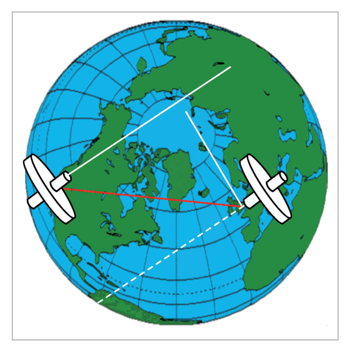
Fig. 11.13 – Transport wander: gyro stays aligned with Los Angeles meridian but London's true north is different — source p.144
Key Point: Earth rate and transport wander occur simultaneously. For simplicity they are explained separately. Their combined effect is corrected by gyro-slaving or periodic alignment in navigation systems.
10. Types of Gyro – by Function
What this section covers: Displacement vs rate gyros, and space vs tied gyros.
Type
Measures
Gimbals
Degrees of Freedom
Examples
Displacement Gyro
Angles (e.g. 10° pitch, 5° bank, 30° heading change)
2
2
DGI, Artificial Horizon
Rate Gyro
Angular rate (e.g. 3°/second)
1
1
Turn Rate Indicator, Yaw Dampers
10.1 Space Gyros vs. Tied Gyros
Type
Reference
Wander
Use
Space Gyro
Fixed point in space (distant star)
Free to wander — nothing corrects it back; must have negligible real wander
INS (very expensive, very accurate)
Tied Gyro
External reference (magnetic north, gravity)
Corrected back to datum by external force
DGI (slaved to magnetic north), Artificial Horizon (slaved to gravity)
Earth Gyro: A subset of tied gyros — maintained vertical or horizontal with respect to local gravity. The Artificial Horizon is an earth gyro. All earth gyros are tied gyros, but not all tied gyros are earth gyros.
11. Types of Gyro – by Construction
What this section covers: The three main construction types of gyroscopes used in aircraft.
Type
Principle
In Service Since
Uses
Tuned Rotor
Traditional spinning disc
Always
Elementary/intermediate training aircraft; basic DGI, AH, Turn Meter
Ring Laser Gyro (RLG)
Compares 2 light paths around a glass prism
1980s
Nearly all modern airliners
Fibre Optic Gyro (FOG)
Extension of RLG principle using optical fibre
Recently
Airbus A380 (first commercial aircraft)
RLG Advantages over tuned rotor: Greater reliability and accuracy, but more expensive.
12. Suction vs. Electric Power
What this section covers: The two power sources for tuned rotor gyros and their respective advantages and limitations.
12.1 Suction (Air-Driven) Gyros
An engine-driven vacuum pump (or venturi) reduces pressure in the instrument case → filtered air sucked in → air jet directed onto rotor buckets (like a water wheel).
Advantages: Independent of electric power — not affected by electrical failure.
Limitations:
Moisture, dust, oil, grit in airflow can block the filter → variable rotor RPM
At high altitude, engine manifold pressure may be insufficient to maintain rotor speed
Impurities that pass through the filter reduce bearing life and unbalance gimbals
12.2 Electric Gyros
Rotor is part of an electric motor — spun electrically.
Disadvantages: Generally more expensive and heavier; require power supplies.
Advantages:
Faster achievement and more accurate maintenance of rotor RPM
Higher RPM achievable → greater moment of inertia → greater rigidity
RPM can be more rapidly achieved and more accurately maintained
12.3 Typical Aircraft Gyro Power Arrangement
Typical arrangement on non-electronic training aircraft:
Main gyro instruments (DGI, AH): usually electric (for greater accuracy)
Standby instruments: often air driven (suction) (available after electrical failure)
Both types can suffer power-source failure:
Electric: A flag indicator alerts the pilot to select standby power.
Suction: An air pressure (suction) gauge indicates vacuum pump failure. Some have a manually selected alternate power source.
13. Gimbal Lock
What this section covers: The phenomenon of gimbal lock and how it is avoided in complex aircraft.
Gimbal lock occurs if an aircraft banks to 90°: the inner and outer gimbals take up the same orientation. One degree of freedom is lost. If the pilot then applies pitch input, the gyro is forced out of orientation → violent precession, usually described as toppling.
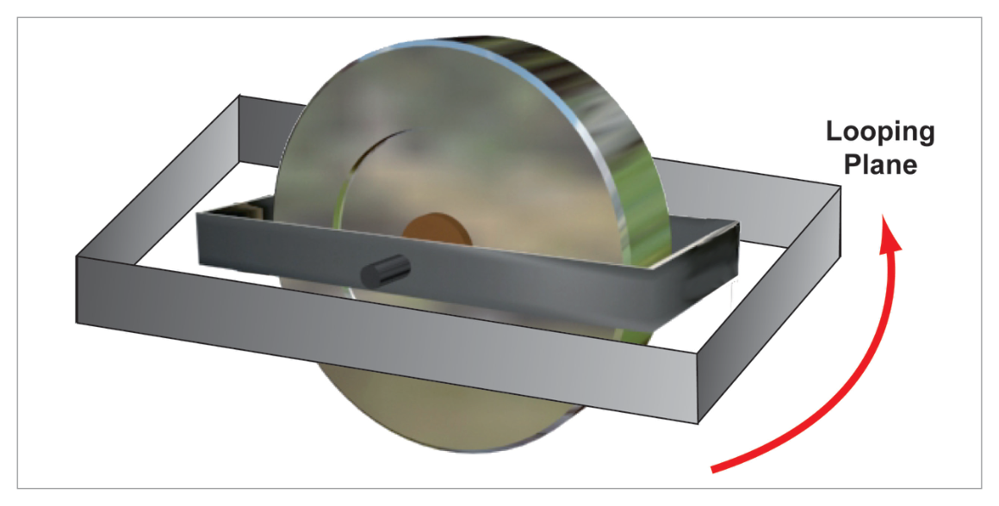
Fig. 11.14 – Gimbal lock: inner and outer gimbals co-planar at 90° bank — source p.146
Gimbal Lock Consequence: Temporary loss of gyro use until re-erected. Serious limitation for aerobatic aircraft.
Solutions to Gimbal Lock:
Fourth gimbal — adds the extra degree of freedom that prevents lock.
Gimbal flip mechanism — a torque motor that rapidly flips the outer gimbal by 180° when lock is approaching, restoring freedom.
The chapter concludes by noting that the magnetic compass's susceptibility to turning and acceleration errors could be overcome using a gyroscope as a direction/attitude datum — providing a datum with rigidity in space and immunity to aircraft manoeuvre effects. This leads to the gyro instruments covered in subsequent chapters.
Space gyro: fixed in space, free to wander (INS). Tied gyro: corrected to external reference (DGI, AH).
Construction: Tuned rotor, RLG (1980s, airliners), FOG (A380 first).
Electric: expensive, heavy, but faster/more accurate RPM. Suction: independent of electrics, but vulnerable to contamination.
Main gyros: electric. Standby: suction (survives electrical failure).
Gimbal lock at 90° bank → toppling. Solutions: 4th gimbal or gimbal flip mechanism.
Gyro rotor: 2–5 cm diameter, 4,000–55,000 rpm.
Practice Questions & Detailed Answers
Questions 1–9 reproduced verbatim from Oxford Instrumentation Chapter 11. Answer key from source.
Q1.Rigidity of a gyroscope depends on:
weight, force applied and speed of rotation
rate of precession and the force applied
weight, rate of precession and speed of rotation
mass, radius of gyration and speed of rotation
Correct Answer: (d) mass, radius of gyration and speed of rotation
Explanation: Rigidity depends on Moment of Inertia (= f(mass, radius²)) and RPM. Radius of gyration is the effective radius at which the mass operates — together with mass, it defines moment of inertia. The three factors are mass, radius of gyration (effective radius), and speed of rotation (RPM). See Section 2.
Why the others are wrong:
(a) "Force applied" is not a determinant of rigidity — it is a determinant of precession rate. Rigidity is a property of the gyro itself, independent of any applied force.
(b) Rate of precession and force applied relate to the precession equation, not rigidity.
(c) Rate of precession does not determine rigidity — it is inversely proportional to rigidity.
Instructor's Note: Rigidity = f(Mass, Radius, RPM). "Weight" ≈ mass but in a technical context, weight is force (mass × g) — mass is the correct term. Always use "mass" not "weight" in these questions.
Q2.A force is applied to deflect a gyroscope. If the rpm of the gyro is then doubled, the precession rate will:
remain as before
increase
decrease
cease altogether
Correct Answer: (c) decrease
Explanation: Precession rate ∝ Torque / (MI × RPM). If RPM doubles (with the same applied torque and same moment of inertia), the denominator doubles → precession rate halves → decreases. See Section 5.
Why the others are wrong:
(a) The precession rate does change — it is inversely proportional to RPM.
(b) Increasing RPM increases rigidity and therefore decreases precession — not the other way round.
(d) Precession would only cease if RPM became infinite, or if the applied torque were removed.
Instructor's Note: Higher RPM = more rigid = harder to precess = lower precession rate for same torque. This is the fundamental trade-off in gyro design.
Q3.In gyroscopic theory the term 'topple' is defined as:
real wander only, in the horizontal plane
real wander only, in the vertical plane
wander, real or apparent, in the vertical plane
wander, real or apparent, in the horizontal plane
Correct Answer: (c) wander, real or apparent, in the vertical plane
Explanation: Topple is wander (whether real or apparent) in the vertical plane. It applies to both real wander (manufacturing imperfections) and apparent wander (earth rate, transport wander). Drift is wander in the horizontal plane. See Section 6.
Why the others are wrong:
(a) & (b) Restricting to "real wander only" is incorrect — topple includes apparent wander in the vertical plane.
(d) Wander in the horizontal plane is drift, not topple.
Instructor's Note: Topple = vertical plane (both real and apparent). Drift = horizontal plane (both real and apparent). These definitions apply regardless of whether the wander is real or apparent.
Q4.A force applied to the spinning axis of a rotor is precessed:
through 90° in the direction of spin of the rotor
through 90° in the direction of spin of the rotor in the northern hemisphere and through 90° in the opposite direction in the southern hemisphere
through 270° in the direction of spin of the rotor
at a rate proportional to the speed of rotation of the gyro
Correct Answer: (a) through 90° in the direction of spin of the rotor
Explanation: Precession always acts 90° ahead (in the direction of spin) of the applied force — this is a universal rule of gyroscopic physics, independent of hemisphere. See Section 4.
Why the others are wrong:
(b) Precession direction does not change with hemisphere — it is always 90° in the direction of rotation, a physical law.
(c) 270° in the direction of spin is the same as 90° in the opposite direction — this would be incorrect.
(d) The precession rate is inversely proportional to RPM — not directly proportional. And this option describes rate, not direction.
Instructor's Note: 90° in direction of spin — always. This is a physical law (angular momentum). No hemispheric variation. 270° in direction of spin = 90° against = wrong direction.
Q5.Real wander of a gyro can be caused by:
asymmetrical friction at the spinning axis
rotation of the earth
increasing the rpm of the rotor
moving the gyro north or south of its present position
Correct Answer: (a) asymmetrical friction at the spinning axis
Explanation: Real wander is caused by manufacturing imperfections — including uneven/asymmetrical friction at the spinning axis (rotor bearings), gimbal friction, imbalance in rotor mass, and unbalanced gimbals. These produce torques that cause the gyro axis to move with respect to inertial space. See Section 7.1.
Why the others are wrong:
(b) Earth rotation causes apparent wander (earth rate), not real wander.
(c) Increasing RPM increases rigidity and does not cause wander — if anything, it reduces precession-induced drift.
(d) Moving north/south changes transport wander (apparent), not real wander.
Instructor's Note: Real wander = manufacturing defects = internal causes. Apparent wander = external/geometric causes = earth rotation + transport. The distinction is always tested.
Q6.A gyro with only one degree of freedom is known as a:
tied gyro
earth gyro
space gyro
rate gyro
Correct Answer: (d) rate gyro
Explanation: A rate gyro has one gimbal and one degree of freedom. It measures angular rate (°/second). Examples: turn rate indicator, yaw dampers. Displacement gyros have two gimbals and two degrees of freedom. See Section 10.
Why the others are wrong:
(a) Tied gyro refers to how a gyro is maintained (tied to an external reference), not its number of degrees of freedom.
(b) Earth gyro refers to the reference datum (local gravity/earth), not degrees of freedom.
(c) Space gyro refers to the reference (inertial space), not degrees of freedom.
Instructor's Note: 1 DoF = rate gyro (1 gimbal). 2 DoF = displacement gyro (2 gimbals). The function (measuring rate vs. angle) is directly tied to the number of degrees of freedom.
Q7.A perfectly balanced space gyro at the equator has its spin axis aligned with true north. After 6 hours the axis will be aligned with:
true east direction
true west direction
true north direction
true south direction
Correct Answer: (c) true north direction
Explanation: At the equator, Earth Rate = 15 × sin(0°) = 0°/hour. The gyro experiences no earth rate drift. Furthermore, a space gyro at the equator with its axis pointing true north (east-west horizontal axis) — the earth's rotation is perpendicular to the gyro axis, so the gyro axis continues to point to the same fixed star, which happens to remain aligned with true north at the equator for this particular axis orientation (along the equatorial plane). The gyro axis stays fixed in space = true north. See Section 8.
Why the others are wrong:
(a), (b), (d) The space gyro at the equator with axis pointing north has zero horizontal earth rate drift. The gyro does not precess. The axis remains aligned with true north (to a distant star) which does not change direction as seen from the equator in this orientation.
Instructor's Note: Earth Rate = 15 × sin(lat). At equator, sin(0) = 0 → zero drift → gyro stays aligned with true north after 6 hours. This is why equatorial operation creates no earth rate problem.
Q8.The main advantage of electric gyros are:
light weight, high rpm, constant speed, inexpensive
high rpm, only require low voltage DC, constant speed, sealed casing
high rpm, high moment of inertia, rapid build-up of speed, constant RPM
sealed casing, constant speed, high precession rate, low cost
Correct Answer: (c) high rpm, high moment of inertia, rapid build-up of speed, constant RPM
Explanation: Electric gyros can spin faster (higher RPM), achieve this speed more rapidly, and maintain it more accurately — giving higher moment of inertia and therefore greater rigidity. These are the primary advantages over suction-driven gyros. See Section 12.2.
Why the others are wrong:
(a) Electric gyros are heavier and more expensive — not lighter or cheaper — than suction types.
(b) "Low voltage DC only" is incorrect — electric gyros can use various power supplies. Also, "sealed casing" is not a defining advantage of electric over suction.
(d) High precession rate would be a disadvantage (means low rigidity). Electric gyros have LOW precession rates (due to high rigidity), not high. Also, they are more expensive, not low cost.
Instructor's Note: Electric gyro advantages: fast spin-up, high RPM, consistent RPM, high rigidity. Disadvantages: heavier, more expensive, needs electrical power. Suction: immune to electrical failure, but vulnerable to contamination and altitude.
Q9.Apparent wander of a gyro can be caused by:
rotation of the earth
clear air turbulence
gimbal friction
external torque
Correct Answer: (a) rotation of the earth
Explanation: Apparent wander occurs because of changes in the observer's frame of reference. The two causes are earth rate (due to earth's rotation) and transport wander (due to eastward/westward flight). Rotation of the earth is directly responsible for earth rate. See Section 7.2.
Why the others are wrong:
(b) Clear air turbulence may cause short-term disturbances but is not a source of systematic apparent wander.
(c) Gimbal friction causes real wander (manufacturing imperfection), not apparent wander.
(d) External torque causes precession and may cause real wander, but is not apparent wander — apparent wander results from the changing frame of reference, not from a force on the gyro.
Instructor's Note: Apparent wander: earth rotation (earth rate) + east/west flight (transport wander). Real wander: manufacturing defects. "Rotation of the earth" is always the correct answer for apparent wander cause.
Master Reference Tables
Parameter
Value
Section
Gyro rotor diameter
2–5 cm
§1
Gyro rotor speed range
4,000–55,000 rpm
§1
Earth rotation rate
15°/hour (360°/24hr)
§8
Earth Rate formula
15 × sin(latitude) °/hour
§8
Earth rate at equator
0°/hour (sin 0° = 0)
§8
Earth rate at poles
15°/hour (sin 90° = 1)
§8
Earth rate sign NH
Negative (heading decreases)
§8
Earth rate sign SH
Positive (heading increases)
§8
Displacement gyro
2 gimbals, 2 DoF
§10
Rate gyro
1 gimbal, 1 DoF
§10
Gimbal lock angle
90° bank
§13
Precession direction
90° in direction of spin
§4
Vertical axis gyro wander
Topple only (no drift)
§6
KEY FORMULAS:
Earth Rate (°/hr) = 15 × sin(latitude)
Precession Rate ∝ Torque / (Moment of Inertia × RPM)
Moment of Inertia ∝ Mass × Radius²
Rigidity ↑ with: Mass↑, Radius↑, RPM↑
Mnemonics:
Gyro properties: "R.P." → Rigidity and Precession (the two properties)
Rigidity factors: "Mr. RPM" → Mass, Radius, RPM
Precession rule: "Force at 12, action at 3" (for clockwise-spinning rotor viewed from above)
Wander types: "D=Drift=Horizontal. T=Topple=Vertical" (D and H have similar shapes; T is tall like vertical!)
Earth rate sign: "NH = Negative, SH = Positive" (NH is Northern, Negative)
Real vs Apparent: "Real = physical defects. Apparent = earth moves around you."